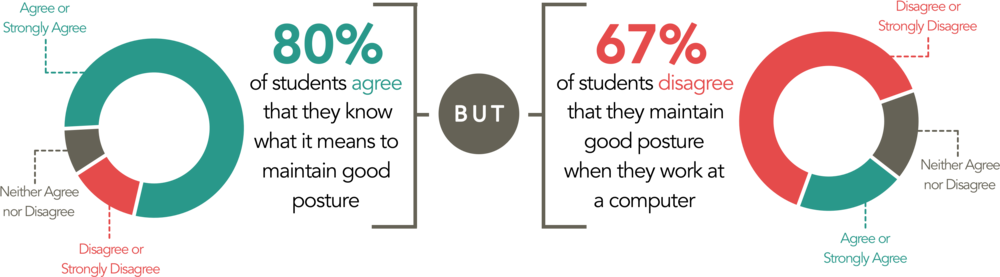
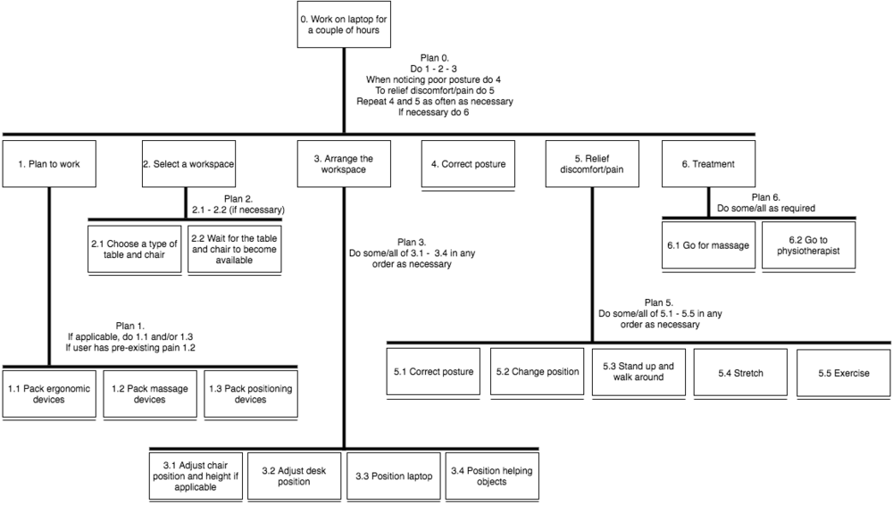
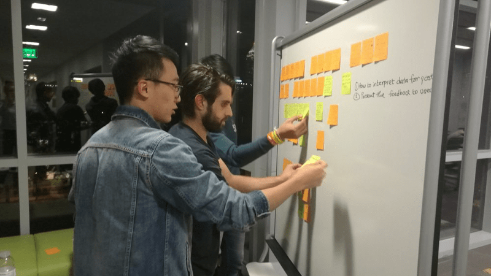

We are working on helping students improve their computer posture through better real-time posture feedback. From survey and interviews, we found that students are aware of the need to improve their posture but are unable to maintain a good posture when they work on their computer for extended periods of time. This is mainly due to them forgetting about it, as their primary focus is on completing their work. Students also seem to not care enough about their for a lot of reasons such as they think they are still young and healthy, they think it comfortable to sit in a certain posture, etc. Whatever solution we design, it has to be minimally disruptive, with a very low barrier of entry.
Tools: Arduino, Sketching, Photoshop, Keynote
My role: Interview, Storyboard, Illustration, 3d modelling, Evaluation
I recognize myself mostly as designer and storyteller in the team. In this multi-background team both in expertise and nationalities, I try to make our process visible and understandable to our audience. This includes identifying problems, visualizing data, illustrating ideations, and combing through the interaction flow of the user experience. In this process of developing a product that is largely based on evidence, I raise a lot of questions not only about the problem scope, but also about how to make user experience better. Although my idea is not always agreed by all the other team members, it does make us think more about the environment that the product is used in.
Duration: 4 months
We defined our user group as Georgia Tech students working on their laptop in public work spaces on campus. We used three methods for data collection on our target user group: observations, short semi-structured interviews, and online survey with closed-format questions.
To begin with, we conducted a survey to get a better understanding of the problem space and of the user group. Specifically, one goal was to determine the extent of computer use among students and the back and neck pain associated with it. The survey also included a few attitudinal questions to scope students’ understanding of good work posture.
The survey was deployed on social media platforms, with one post on Georgia Tech’s reddit, and posts in Facebook public groups for undergraduate class of 2016 through to 2020. This strategy yielded 124 responses.
The survey established a large number of students experience neck/back pain. 40% of respondents reported experiencing back and neck pain occasionally, frequently or constantly, and 88% of respondents reported the pain to be mild or moderate. Another 3% reporting the pain to be very severe. A gap between what students think and what they do when it comes to computer posture was also highlighted.
Performing a task analysis for posture maintenance during laptop-assisted work is not straightforward as the task of interest - posture maintenance - is never the primary task performed by the user. In this case, the primary task is completing schoolwork. Hence, in our task analysis, most actions are optional and completed by a subset of users.
In order to organize and process our findings from the 12 students interviewed, an affinity diagram exercise was conducted. Observations and responses from the interview process were logged by an anonymous signifier to distinguish users and translated to small cut-outs for processing. A deductive approach was applied in which the categories were derived from the observations.
Ultimately, observations were grouped into three major categories: personal preferences/user characteristics, posture awareness factors, and current approaches to the problem. From here, a group of subcategories was developed.
Based on our 12 interviewers and the common types of behavior and attitude we noticed through survey analysis and observation, we developed 2 personas to represent our typical user group.
Age: 20 years old
Education: Junior in Electrical Engineering
Habit: Spends long periods of time working at a desk
History of back pain: Has problems with lower back pain
Objects to facilitate posture: Brings a massage ball and Tylenol to work on campus
Goal: Working at a desk without exacerbating back pain
Age: 19 years old
Education: Sophomore in Computer Science
Habit: Spends long periods of time working on laptop
History of back pain: No
Objects to facilitate posture: Doesn’t own or use any ergonomic accommodations
Goal: Get reminded subtly if his posture went too bad
The photo below displays a general description of the 42 design ideas clustered by affinity mapped category.
After more and deeper discussions of the desk display concept, we find that there is more possibility and directions for the desk display. It does not have to be mimicking human body itself. Moreover, people seldom naturally put a "human figure" on their desks. In this case, giving the product a simple artistic form might be a better choice to fit into the working environment that users are already familiar with.
However, we cannot make too many assumptions on which concept is better, we need to test it. Anyway, if the character is designed in a cute way that is more like a cartoon figure, it still could work well. As a result, we built 2 prototypes in P3, hoping to have feedbacks that direct us to the final solution.
1. Desk Character- RobotMan
The character is designed in a way that shows clear mapping between the user and the product. It indicates gradual change in posture, with the body of character tilting to the certain side reflecting the user’s way of sitting. The arms of the figure hang passively according to its posture at the direction it is leaning towards, creating a funky image when it tilts.
When it reaches a critical point based on duration and intensity of bad posture, the LED installed on the head of the figure will light up. When the user lean towards the left, the LED at the left side will light up; and LED at the right side will light up when the user leans to the right.
2. Desk Sculpture- Floating Orb
The desk sculpture is an unbiased way to present the state of their posture to the user. The structure is fixed on a base consisting of 2 servo motors that allows 180 degrees movement in horizontal and vertical axis. This allows us to rotate and tilt the structure in the same direction as the user is tilting or slouching, giving a better feedback to the user about his/her posture.
The structure will have 3-5 levels of LEDs at equal distance. If the user sits in an incorrect position for too long, the LED will start lighting from the bottom to top until the ball on the top is lit in red color, presenting the need to change user’s posture. In the future iterations of this prototype we would also want the ball at the top to detach and fall as it tilts more. This will catch their attention immediately and indicate to the users about something that is incorrect. This should trigger a change in their posture.
In order to evaluate our design, we have merged the relevant components of various usability criteria, including Nielson and Molich’s heuristics. From these, we decided that the following heuristics are important evaluation metrics for our design:
In this testing, we tried to understand how people understand our design of both prototypes. We ask participants questions as they watch our member's behavior and the reaction of the prototype. The specific questions are as following.
After performing the tests on both the abstract art object and the Robot Man, we found that participants understood the functioning of the device better with the abstract art figure than with the Robot Man. All participants with the orb understood the posture monitoring aspect of the device, whereas with the Robot Man, participants stayed more general, talking about weight distribution, rather than posture itself.
For all those reasons, we decided to go ahead with the Floating Orb as our final design for the third and final phase of testing.
In this testing, we tried to understand how people understand our design of the Floating Orb. The specific questions are as following.
Based on the findings from user testings, we redesign the product, which is illustrated on the top of this page.